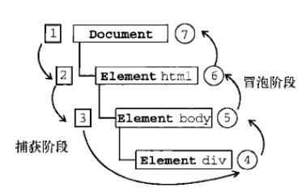

事件发生时会在元素节点之间按照特定的顺序传播，这个传播过程即DOM事件流。
DOM事件流分为三个阶段，分别为：
捕获阶段：事件从Document节点自上而下向目标节点传播的阶段；
目标阶段：真正的目标节点正在处理事件的阶段；
冒泡阶段：事件从目标节点自上而下向Document节点传播的阶段。

捕获阶段：
1 <!DOCTYPE html>
2 <html lang="en">
3
4 <head>
5 <meta charset="UTF-8">
6 <meta name="viewport" content="width=device-width, initial-scale=1.0">
7 <meta http-equiv="X-UA-Compatible" content="ie=edge">
8 <title>Document</title>
9 <style>
10 .father {
11 overflow: hidden;
12 width: 300px;
13 height: 300px;
14 margin: 100px auto;
15 background-color: pink;
16 text-align: center;
17 }
18
19 .son {
20 width: 200px;
21 height: 200px;
22 margin: 50px;
23 background-color: purple;
24 line-height: 200px;
25 color: #fff;
26 }
27 </style>
28 </head>
29
30 <body>
31 <div class="father">
32 <div class="son">son盒子</div>
33 </div>
34 <script>
35 var son = document.querySelector('.son');
36 son.addEventListener('click', function() {
37 console.log('son');
38 }, true);
39 var father = document.querySelector('.father');
40 father.addEventListener('click', function() {
41 console.log('father');
42 }, true);
43 document.addEventListener('click', function() {
44 console.log('document');
45 }, true);
46 </script>
47 </body>
48
49 </html>控制台输出结果为：
可以看出捕获阶段 事件是从Document节点自上而下向目标节点传播的。
1 <script>
2 var son = document.querySelector('.son');
3 son.addEventListener('click', function() {
4 console.log('son');
5 }, false);
6 var father = document.querySelector('.father');
7 father.addEventListener('click', function() {
8 console.log('father');
9 }, false);
10 document.addEventListener('click', function() {
11 console.log('document');
12 })
13 </script>控制台输出结果为：
可以看出冒泡阶段 事件是从目标节点自上而下向Document节点传播的。
注意：
1、JS代码只能执行捕获或者冒泡其中一个阶段（要么是捕获要么是冒泡）
2、onclick和attachEvent（ie）只能得到冒泡阶段
3、addEventListener(type, listener[, useCapture]) 第三个参数如果是true，表示在事件捕获阶段调用事件处理程序；如果是false（不写默认是false），表示在事件冒泡阶段调用事件处理程序
4、实际开发中，我们很少使用事件捕获，我们更关注事件冒泡
5、有些事件是没有冒泡的，比如onblur、onfocus、onmouseenter、onmouseleave
6、事件的冒泡有时会带来麻烦，不过是可以被阻止的，方法是：stopPropagation()
stopPropagation() 方法：终止事件在传播过程的捕获、目标处理或冒泡阶段进一步传播。调用该方法后，该节点上处理该事件的处理程序将被调用，事件不再被分派到其他节点。